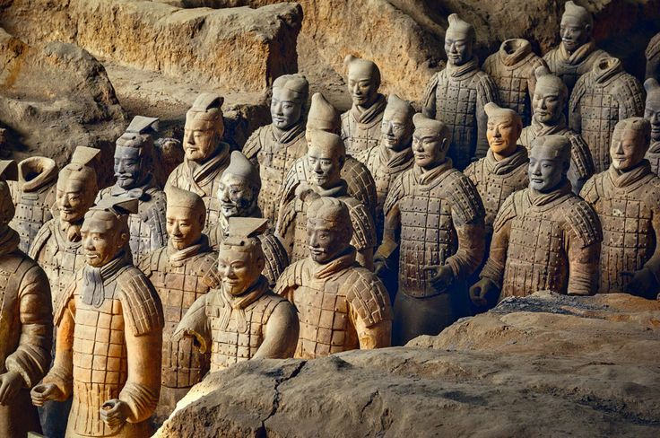

Ying Zheng became Qin Shi Huang after the warring states were brought beneath one rule.
Roads were standardized. Measurements were standardized. Writing was standardized.
His empire was built upon order.
Even death was given architecture.

The soldiers were made to accompany him.
The soldiers were not the destination.
The destination was built beneath the earth.
The archivist wrote one final word beside the image.
MAUSOLEUM.